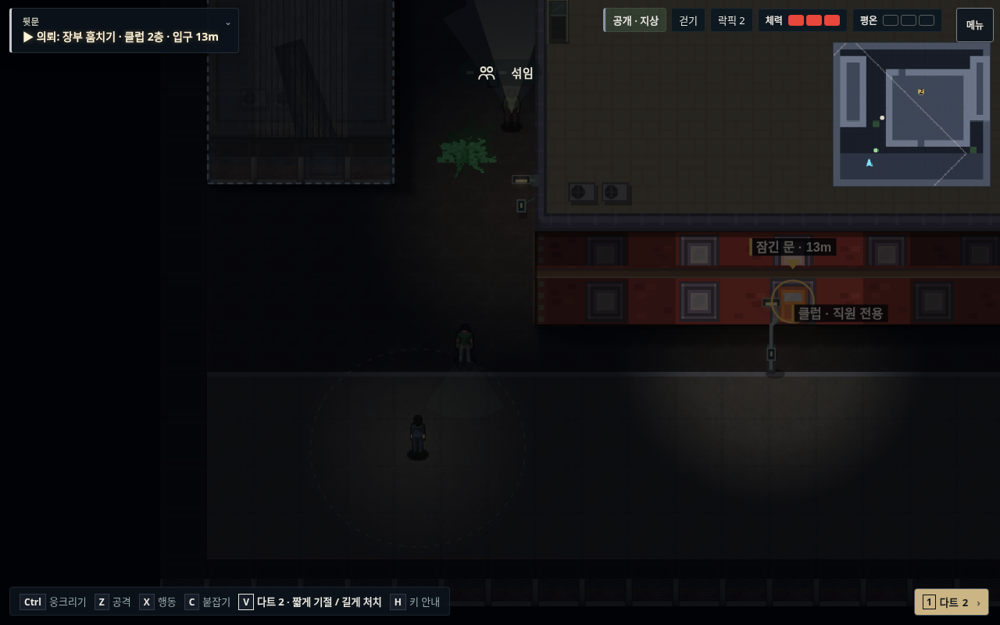
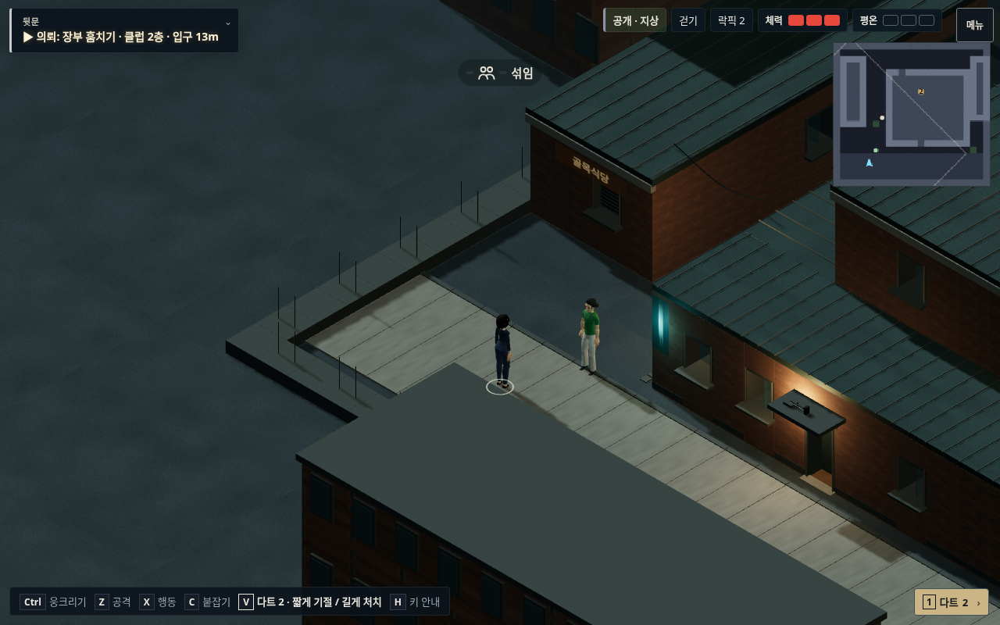
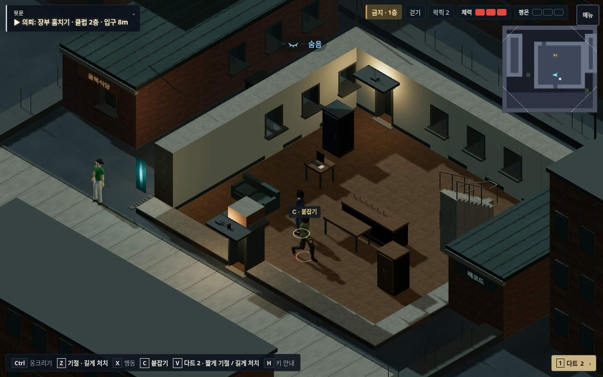
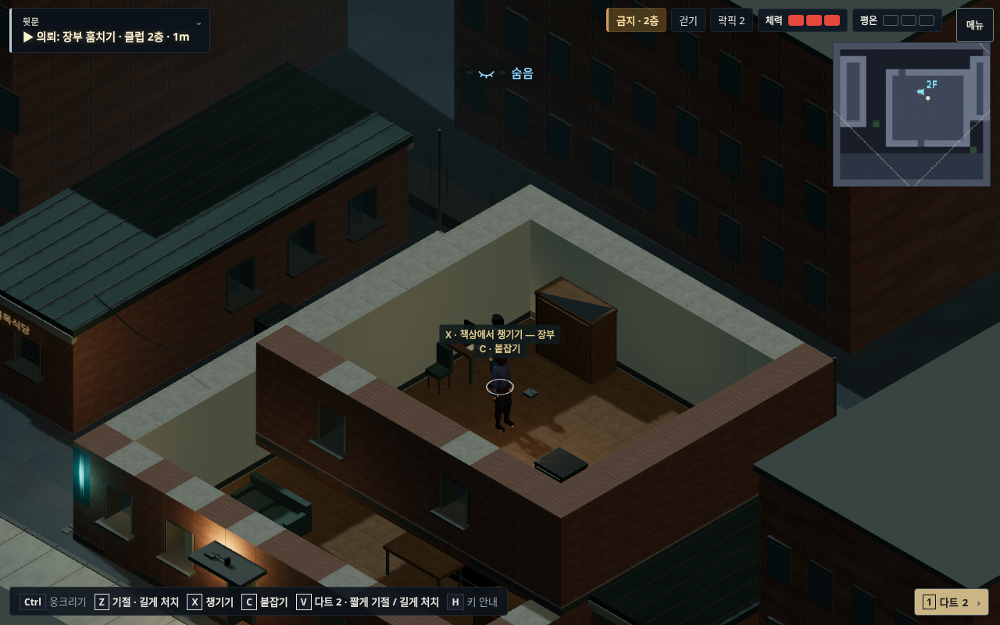
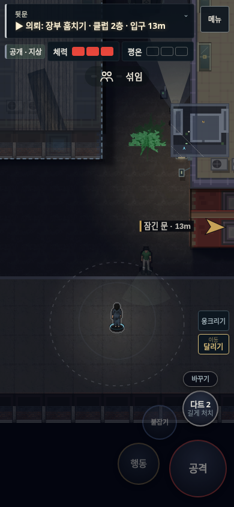
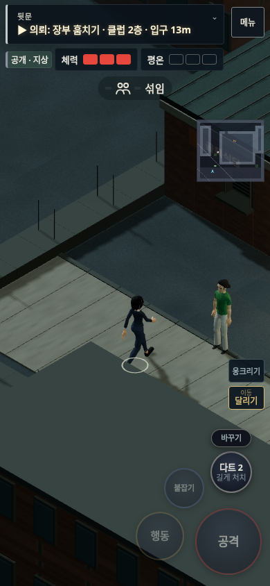
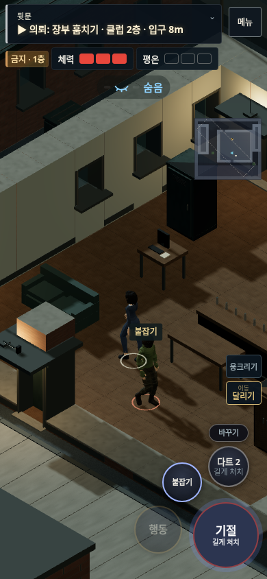
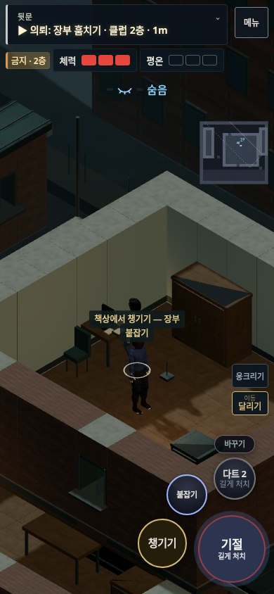

야행 · v128클럽 뒷골목
골목에서 2층 사무실까지 이어지는 사선 시점 플레이 구역입니다. 건물·인물·가구의 축척과 조명을 맞추고, 문·수납함·계단을 같은 공간 안에 연결했습니다.
장부를 회수하고 서쪽 골목으로 빠져나오면 완료됩니다. PC는 방향키로 이동, C 붙잡기, Z 공격, X 행동을 사용합니다. 모바일은 왼쪽을 끌어 이동합니다.
이번 개편은 이 대표 구역에 적용했습니다. 전체 캠페인과 출시작 수준의 미술 완성도를 대체하는 결과는 아닙니다.
화면 비교
같은 새 배치를 기존 렌더러와 새 사선 렌더러로 표시했습니다. 기존 배포판에 이 맵이 있었다는 의미는 아닙니다.

기존 렌더러 · 같은 배치
새 사선 렌더러 · 같은 배치연결된 실내와 2층

1층 홀
2층 사무실
기존 렌더러 · 같은 배치
새 사선 렌더러 · 같은 배치연결된 실내와 2층

1층 홀
2층 사무실플레이 검수 영상
실제 브라우저에서 기록한 프레임의 중복과 GPU 대기를 제거해 20fps로 재생한 보기용 영상입니다. 활성 AI와 정상 행동 판정으로 회수·탈출을 검사했습니다. 클라우드 소프트웨어 GPU에서 화질을 낮춰 녹화했으며 실제 휴대폰의 성능을 나타내는 영상은 아닙니다. 녹화 이후 처치한 몸 표시와 운반 시작·종료를 추가로 보완했습니다.
원래 시간으로 녹화한 전체 영상 · 검수 결과